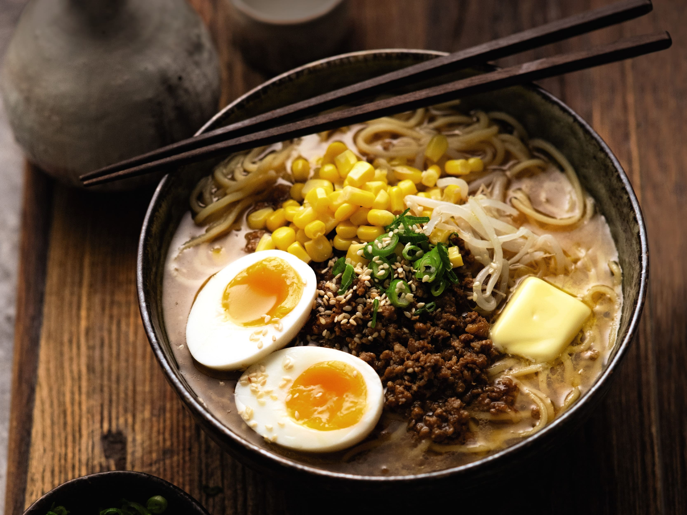
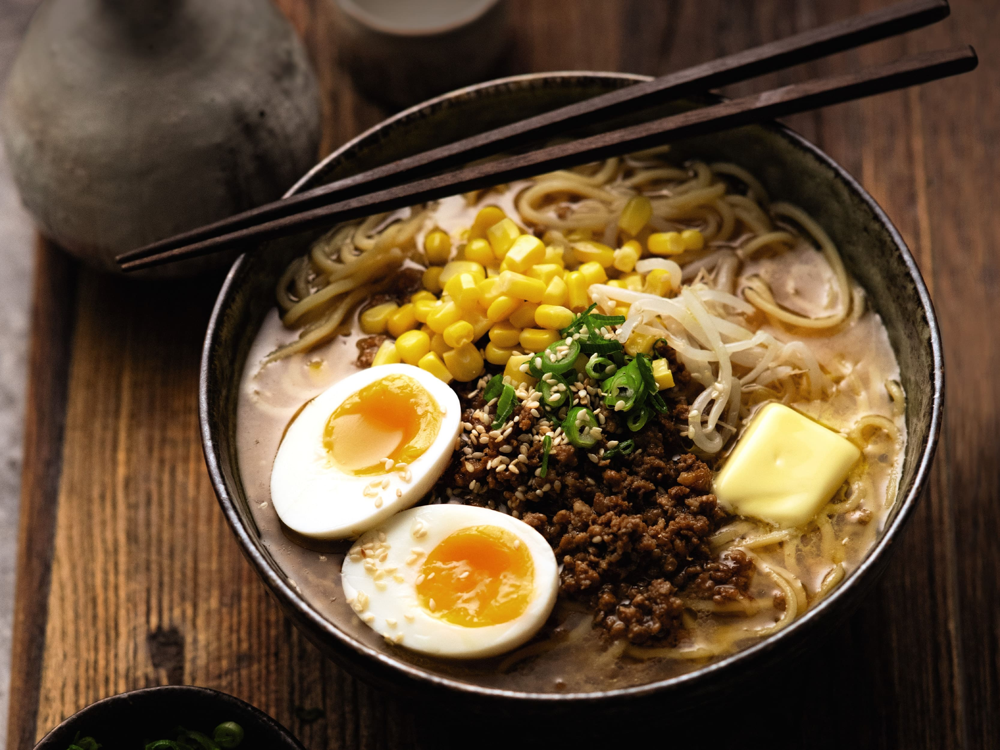

We Love Ramen
At Niponsito, we're passionate about bringing the rich and flavorful experience of traditional ramen straight to you, wherever you are. Inspired by the vibrant street food culture of Japan, we set out to create a mobile ramen cart that captures the essence of this beloved dish and delivers it to you.
Our journey began with a deep appreciation for the art of ramen-making and a desire to share it with our community. We source the finest ingredients, from premium noodles to savory broths and fresh toppings, ensuring that every bowl of ramen we serve is bursting with authentic flavors and textures.
But it's not just about the food—it's about the experience. We take pride in creating a welcoming and lively atmosphere at our street cart, where customers can gather, socialize, and savor each delicious bite of our signature ramen. Whether you're a longtime fan of ramen or trying it for the first time, we guarantee an unforgettable culinary adventure with every visit to Niponsito.

 
